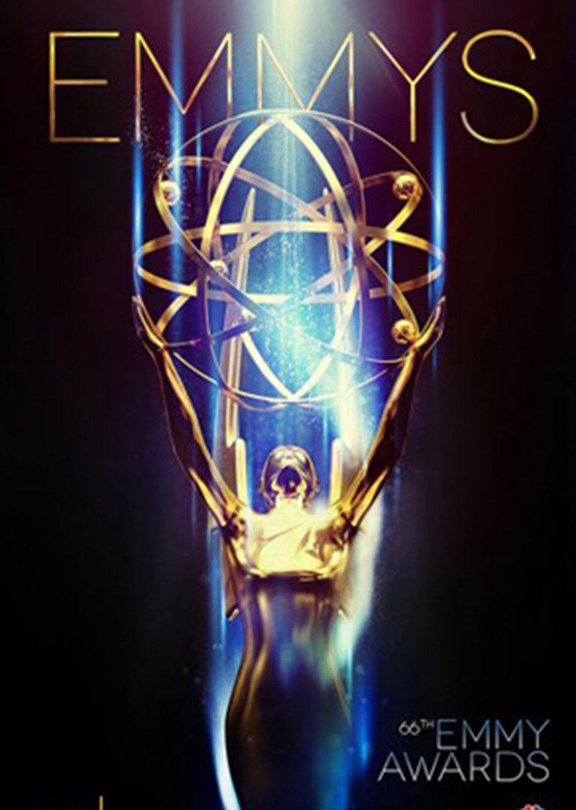
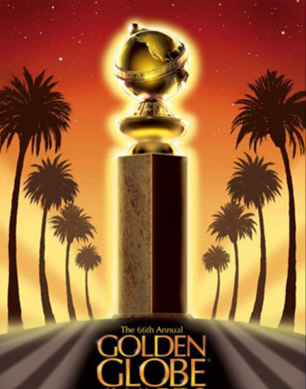

STRANGER THINGS 怪奇物语
|
剧情简介
本剧背景设置在上世纪八十年代的印第安纳州，一个小男孩神秘的消失了；他的朋友、家人以及当地的警方开始竭力找寻答案，但却被卷入了一个充斥秘密试验和恐怖超自然力量的神秘事件中，一个陌生的小女孩看似也与这起事件有莫大的关系。 SEASON 1
霍金斯小镇自上次怪物出现后，又恢复了平静，不过怪事还是接二连三地出现。霍珀警长调查来调查去，却毫无头绪。威尔虽然从“逆世界”被救回来，但整个人都变了。他被来自逆世界的“阴影怪物”附身，时常会出现“断片儿”，穿越到逆世界。 SEASON 2
|
||
|
获奖记录

Emmy Awards
获奖：5
提名：13 
Golden Globe Awards
获奖：0 提名：2 |
||